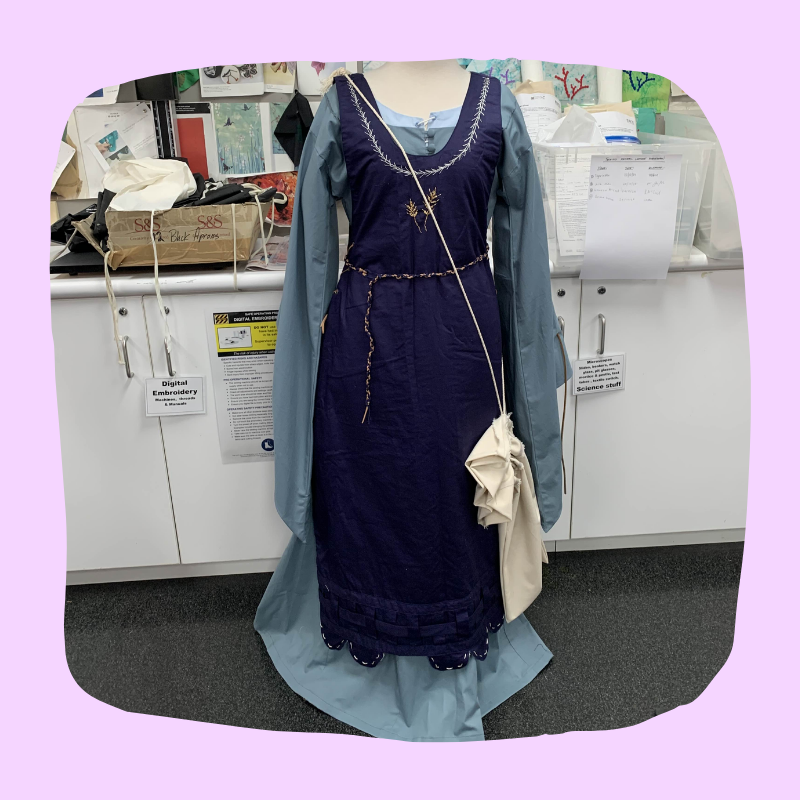

Stage 4 Technology Mandatory
Year 7 Textiles Technology Unit: Mini Felt Banner

Stage 4 Technology Mandatory
Year 8 Food Technology Unit: Charcuterie Board Food Practical
Stage 5 Textile Technology
Year 9 Textile Technology Unit: Personalised Pyjama Set

Stage 5 Food Technology
Year 10 Food Technology Unit: Food Challenge: Ancient Grains

Stage 6 Textiles and Design
Year 11 Textiles and Design: Medieval Costume
Stage 6 Food Technology
Year 12 Food Technology Unit: $10 Meals